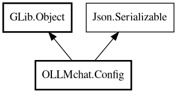

Config
Object Hierarchy:

Description:
public class Config : Object, Serializable
Configuration management for OLLMchat client settings.
Handles loading and saving client configuration to JSON file. Supports single client configuration (Phase 1) with structure designed to
support multiple clients in the future.
Since:
1.0
Content:
Properties:
- public string api_key { get; set; }
Optional API key for authentication
- public string model { get; set; }
Model name to use for chat requests
- public bool think { get; set; }
Whether to return separate thinking output in addition to content
- public string title_model { get; set; }
Model name for title generation (optional)
- public string url { get; set; }
Server URL e.g. http:\/\/localhost:11434\/api
Static methods:
Creation methods:
- public Config ()
Default constructor.
Methods:
Fields:
Inherited Members:
All known members inherited from class GLib.Object
- @get
- @new
- @ref
- @set
- add_toggle_ref
- add_weak_pointer
- bind_property
- connect
- constructed
- disconnect
- dispose
- dup_data
- dup_qdata
- force_floating
- freeze_notify
- get_class
- get_data
- get_property
- get_qdata
- get_type
- getv
- interface_find_property
- interface_install_property
- interface_list_properties
- is_floating
- new_valist
- new_with_properties
- newv
- notify
- notify_property
- ref_count
- ref_sink
- remove_toggle_ref
- remove_weak_pointer
- replace_data
- replace_qdata
- set_data
- set_data_full
- set_property
- set_qdata
- set_qdata_full
- set_valist
- setv
- steal_data
- steal_qdata
- thaw_notify
- unref
- watch_closure
- weak_ref
- weak_unref
All known members inherited from interface Json.Serializable
- default_deserialize_property
- default_serialize_property
- deserialize_property
- find_property
- get_property
- list_properties
- serialize_property
- set_property